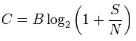

ハイパフォーマンスブラウザネットワーキング〜5, 6章〜 |
Miwa Oshiro
|
どこにいてもインターネットとつながることのできる現在、
ワイヤレスネットワークは多様化している。
この章では、
説明されている。
ワイヤレス通信方式には、最大のチャネル容量が存在する。
チャネル容量とは、
受信 → 送信とデータを送信する際に通る伝送路を介して
確実に伝送できる情報の量のこと
このチャネル容量は、基本的な原則原理によって決定する。
最大のチャネル容量の計算方法がある。

シャノン・ハートレーの定理である
チャネル容量に影響する2つの要素が以下である。
である。
ワイヤレスネットワークには様々な種類があるけれど、
基礎的な制約事項は共通している。
使用する周波数帯域によってパフォーマンスが変わる
理想の環境
現状ほとんどありえない
帯域幅、SN比といった物理的要素に続き、
信号の符号化アルゴリズムも重大な影響をもっている
アナログからデジタルへの変換のことである。
この変換のことを、変調と呼ぶ。
変調は、変調アルファベットによって変換効率が変わる。
変調アルファベットとシンボルレートの組み合わせで
チャネルのスループットが決まる。
パフォーマンスに影響を与える要素として、
現状、望み通りのデータ転送速度の達成には・・・
この章では、
説明されている。